Create a cutout
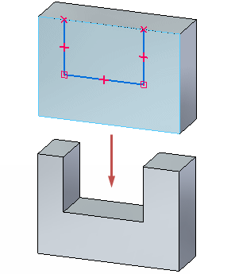
In the next few steps, you construct the extruded cutout feature shown in the illustration, using a workflow similar to the one used to construct the base feature.
Draw a sketch on the front face of the part, and then use the Select tool to construct the feature.
Also, learn how to control the display of 2D sketch relationships.
In PathFinder, click the Show/Hide button adjacent to Base to hide the Base coordinate system.
Notice that the Base entry in PathFinder change color and that the Base coordinate system is hidden in the graphics window.
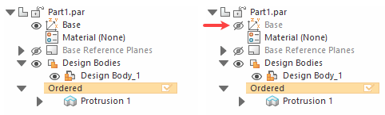
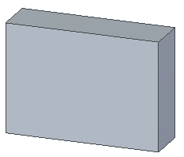
-
Choose the Home tab→Solids group→Extrude command .
On the Extrude command bar, make sure that the Select option is set to Coincident Plane.
Hover over the front plane and when it highlights, click.
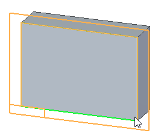
Choose the Home tab→Intellisketch group→Intellisketch command  .
.
Make sure your dialog box options match the image.
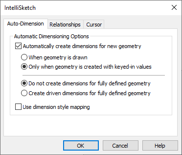
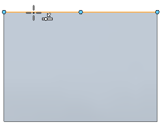
Position the cursor as shown in the illustration, and when the point-on relationship indicator displays
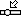
adjacent to the cursor, click to start the line.Move the cursor downward. Notice the following:
-
A line stretches to follow the cursor wherever it moves. The line also has edit boxes attached to define length and direction.
-
When the line is vertical, a vertical relationship indicator displays adjacent to the cursor.

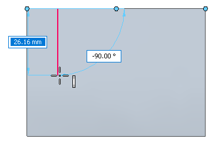
Move the cursor until:
-
The vertical relationship indicator displays at the cursor.
-
The Length in the edit box is approximately 25 mm.
-
The Angle in the edit box is -90 degrees.
When the line is vertical, and approximately 25 mm long, click to finish the first line.
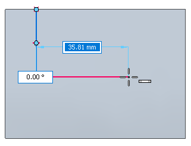
The Line command is still active, ready to draw a line connected to the end point of the previous line.
-
Position the cursor as shown, and when the line is approximately 36 mm and the horizontal relationship indicator displays, click to place the second line.
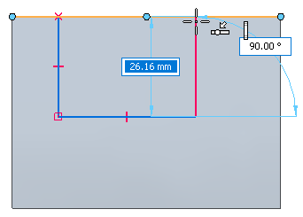
The Line command is still active, ready to draw a line connected to the end point of the previous line.
Position the cursor as shown, and when the point-on-element and vertical relationship indicators display, click to place the third line.
Right-click to restart the Line command.
In the next few steps, place dimensions on the sketch using the Smart Dimension command  .
.
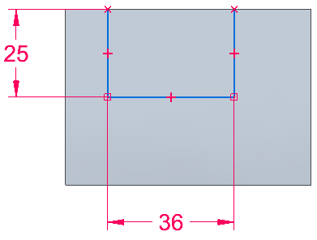
On the ribbon, click the Home tab→Dimension group→Smart Dimension command  .
.
Position the cursor over the sketch element, as shown. When it highlights, click to select it.
Notice that dimension elements attach to the cursor.
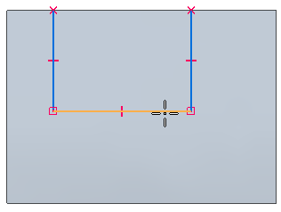
Position the cursor below the model, and click to place the dimension.
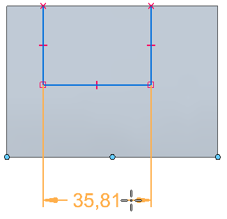
An edit box displays near the cursor so that the dimension value can be changed.
Type 36, and press Enter.
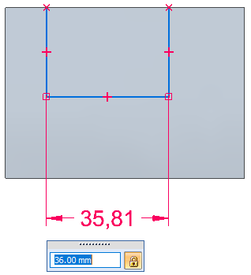
Observe that the dimension color is red, and that the dimension could be edited immediately upon placement.
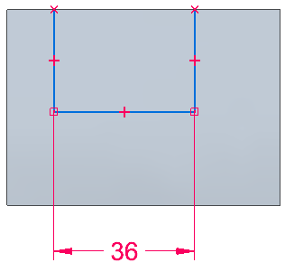
Repeat these steps to place a dimension on the vertical line as shown in the image.
In the next few steps, place a dimension on the sketch using the Distance Between command .
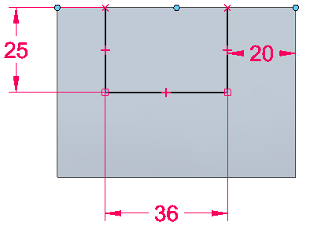
On the ribbon, click the Home tab→Dimension group→Distance Between command .
Position the cursor over the sketch element, as shown. When it highlights, click to select it.
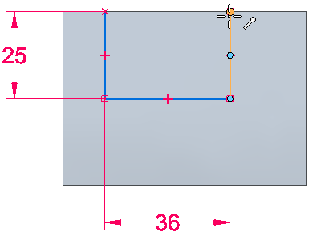
Position the cursor over the edge of the sketch, as shown. When it highlights, click to select it.
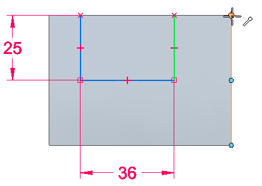
Position the cursor as shown, and click to place the dimension.
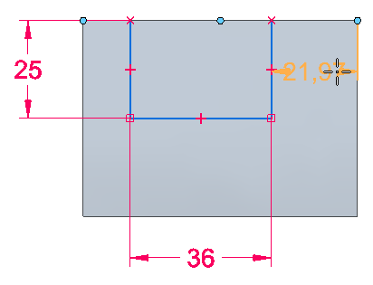
In the edit box, type 20, and then press Enter.
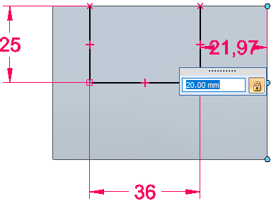
Observe that the dimension color is red, and that the dimension could be edited immediately upon placement.
-
On the Home tab→Close group, choose the Close Sketch command .
You can also close the sketch using the Close Sketch icon in the top-left corner of the graphics window.
The Close Sketch command closes the profile view and returns to the 3D part view.
-
Position the cursor so the cursor points inward, as shown, and then click.
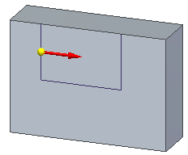
On the Extrude command bar, select the Through All option
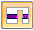
.Position the cursor so the arrow direction is as shown.
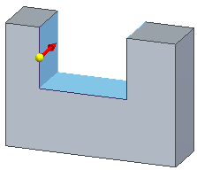
Click to remove the material.
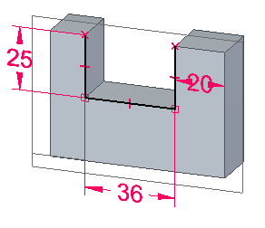
Right click to finish the extent and press Esc to dismiss the Extrude command.